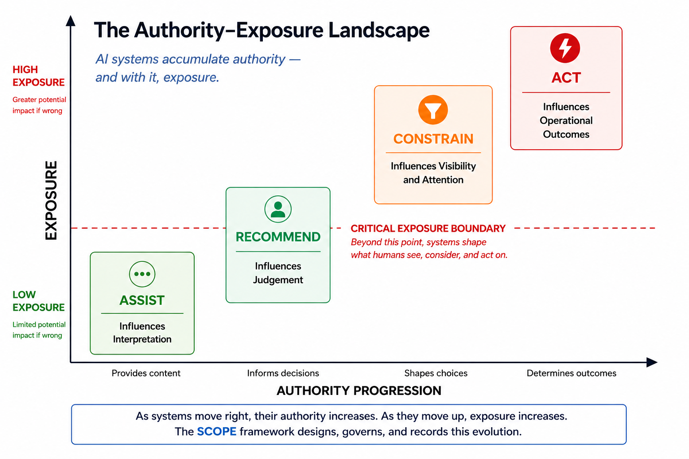

2. The AUTHORITY PROGRESSION MODEL
The Authority Progression Model outlines four different authority states that AI systems typically go through: Assist, Recommend, Constrain, and Act. Each stage marks a shift not in capability, but in how authority is shared between humans and AI systems.
Not all systems need to progress through all four stages. Some may stay at Assist or Recommend permanently. As shown in Figure 1, the model helps map how authority changes as systems become more integrated into organisational workflows.
Assist: Supporting Human Interpretation
In the Assist stage, the AI system provides information that helps humans understand but does not suggest actions or change workflows. Examples include summarizing, classifying, extracting, transcribing, or retrieving information.
The system may have access to relevant data and context, but its outputs are purely informational. Humans are responsible for interpreting the information, making decisions, and taking actions.
Authority remains fully with humans. The system can help with understanding but cannot affect outcomes directly; that influence comes through human interpretation. The main feature of Assist systems is that the decision-making framework stays the same. Humans see all available options and have complete visibility over the workflow.
For instance, a recruitment team handling applications: at the Assist stage, an AI system summarizes each application and highlights key qualifications. Recruiters can view every application. The system provides helpful information without influencing which candidates are considered.
Recommend: Shaping Human Judgment
The shift into the Recommend stage happens when the system starts to suggest actions. Recommendations may include responses, routing options, risk assessments, prioritization scores, or other types of guidance.
This marks a significant increase in authority as the system begins to influence human judgment rather than just providing information.
Humans still make final decisions and take action, but their decision-making increasingly references the outputs from the system. Recommendations can focus attention, frame choices, and create cognitive biases.
Nevertheless, humans maintain full visibility of the operational environment. The decision-making framework remains complete, and every case, option, or workflow state is visible to operators, even if recommendations affect how those options are assessed.
In the recruitment example: at the Recommend stage, the system suggests which candidates should advance to interviews based on their match scores. Recruiters can review all applications, but their focus is influenced by system outputs. Recommend systems guide how decisions are considered without changing the available choices.
Constrain: Shaping the Decision Surface
Constrain marks the critical transition in the progression model.
At this stage, the system does more than advise—it starts to shape the options, cases, or information available for human review. This can happen through prioritizing, filtering, routing, escalation management, or other means that decide what gets attention.
The significant feature of Constrain systems is that they alter the decision surface.
Instead of evaluating a complete operational picture, humans now interact with a subset chosen or organized by the system. Some cases may be prioritized for review, while others are deprioritized or omitted entirely.
In the recruitment context: at the Constrain stage, the system filters the candidate pool, showing only those who meet a specific score threshold. Recruiters no longer see all applicants. The decision surface is now defined by the system, meaning errors can involve not just incorrect recommendations but also qualified candidates who were never presented.
This transition has profound governance implications. Although humans may still perform all final approvals, their visibility is now shaped by the system. Here, humans remain responsible for operations but lose clarity about the entire decision landscape. The accountability gap at Constrain is hidden; humans cannot know what they aren't seeing.
Act: Executing Operational Decisions
At the Act stage, the system is allowed to take operational actions on its own within set limits. These actions can include approving transactions, routing cases, starting workflows, changing system states, or triggering downstream processes.
Humans can still oversee, set policy limits, and review exceptions, but the system directly handles regular operational tasks.
This shift presents a new kind of governance challenge. Errors can spread much more quickly than human review processes. Risks extend beyond decision quality to issues like reversibility, recovery, and auditability. The organisation depends not just on the accuracy of the system's outputs but also on the reliability of its operations.
In the recruitment example: at the Act stage, the system automatically moves candidates forward or rejects them at designated stages without human review. Errors can enter offer pipelines, rejection communications, and candidate records before any human sees them.

Figure 1: The Authority-Exposure ModelProgression as Authority Expansion
Viewed together, the four stages show a shift from informational support to operational authority:
- Assist systems influence interpretation.
- Recommend systems influence judgment.
- Constrain systems influence visibility and attention.
- Act systems influence operational outcomes directly.
Each transition changes the relationship between humans, systems, and important decisions. SCOPE's purpose is to make sure that each transition is intentional, clear, and deserved. It should not just happen automatically because of capability.
The next question is why some transitions are more important than others. To answer this, we need to understand what is actually at risk when authority increases.